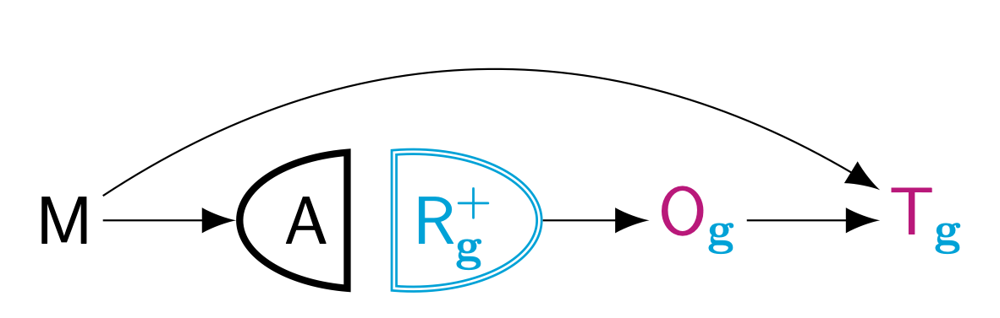

MARGinal Observational Treatment-effects.1
Causal inference requires balance across the treatments to be compared. In observational studies, such balance is not guaranteed; quantifying causality therefore requires careful, multi-step workflows.
The goal of margot is to enhance the accessibility of these workflows for causal inference. Its primary audience includes psychological scientists, although it may benefit other social scientists.
The package offers functions for:
- evaluating causal assumptions
- modelling time-series data
- reporting results
- performing sensitivity analyses
margot focuses on streamlining the estimation of (Marginal) Average Treatment Effects, but it also supports workflows for Conditional Average Treatment Effects, Heterogeneous Treatment Effects, and Modified Treatment Policies.
This version of the package is a work in progress and experimental.
Installation
You can install the development version of margot like so:
if (!require(devtools, quietly = TRUE)) {
install.packages("devtools")
library(devtools)
}
devtools::install_github("go-bayes/margot")Example
library("margot")
# create transition table to evaluate the positivity assumption
transition_matrix <- create_transition_matrix(df_nz, "religion_believe_god", "id")
# create table and table explanation
table_change_belief <- transition_table(transition_matrix)
table_change_beliefCode
Go to:https://github.com/go-bayes/margot
Code
The code in this package is licensed under the GNU General Public License (GPL) v3.0. You can redistribute it and/or modify it under the terms of the GPL as published by the Free Software Foundation. For more information, see GPL v3.0.
The margot package is distributed in the hope that it will be useful, but WITHOUT ANY WARRANTY; without even the implied warranty of MERCHANTABILITY or FITNESS FOR A PARTICULAR PURPOSE. See th GNU General Public License for more details.